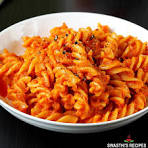

Home
Classic Tomato Pasta

Description
This classic tomato pasta is a quick, delicious meal made with fresh
tomatoes, garlic, and basil. Perfect for busy weeknights!
Ingredients
- 200g spaghetti
- 2 tablespoons olive oil
- 3 garlic cloves, minced
- 4 ripe tomatoes, chopped
- Salt and pepper to taste
- Fresh basil leaves
- Grated Parmesan cheese (optional)
Steps
- Boil pasta according to package instructions.
- Heat olive oil in a pan and sauté garlic until golden.
- Add tomatoes and cook for 10 minutes until soft.
- Season with salt and pepper, add basil leaves.
- Drain pasta and mix with the sauce.
- Serve hot with Parmesan cheese if desired.